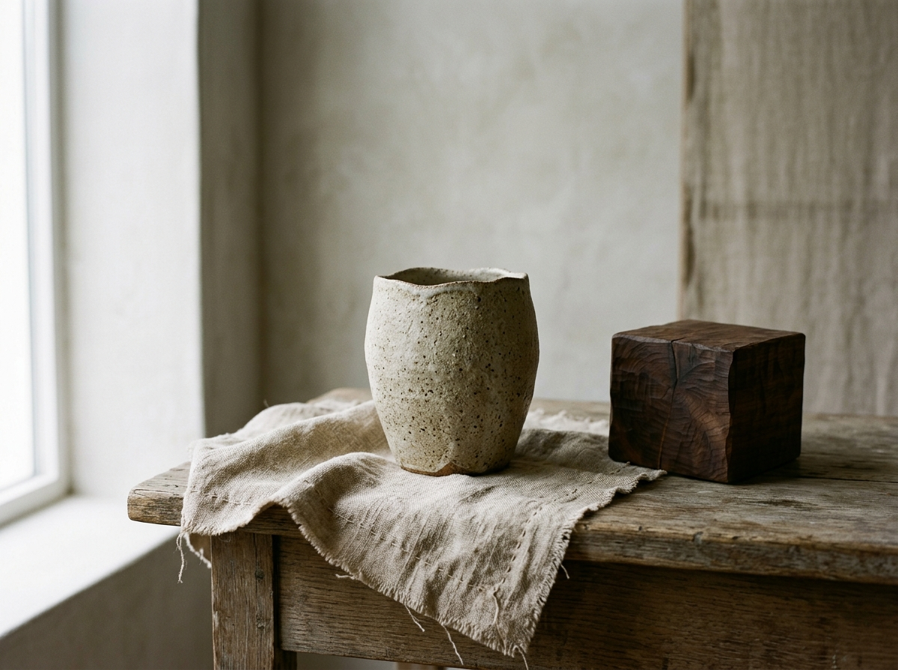
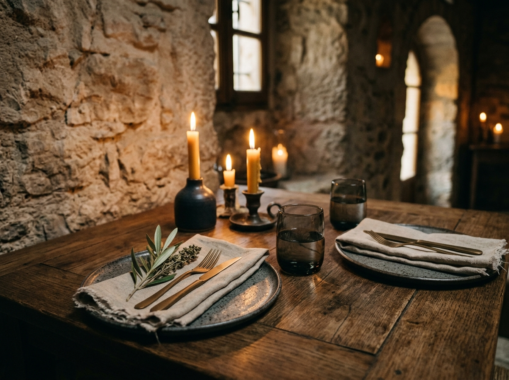

Selected Archives
A curated study in light, form, and texture.
Click any plate to inspect architectural specs and high-resolution details in the lightbox viewer.
The Travertine Loggia

Vessels in Still Water

Drafting Archive

The Evening Service Staging